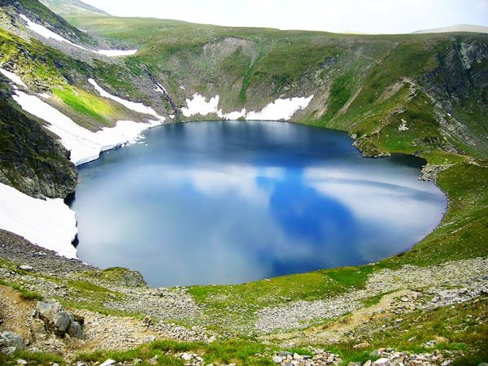

Okoto is a glacial circus lake in Rila , the second of the Seven Rila Lakes . It is also known as the Heart, and in the past was called Chanak Gyol . [1] It is located at 2440 meters above sea level.
The lake is 37.7 meters deep - it is the deepest of the glacial lakes on the Balkan Peninsula. It is 390 m long and 240 m wide. It occupies a water area of 68 decares and its water volume is 860,000 m 3 . [2]
The eye flows from its northeastern end to the lower lake Bliznaka . On the southern side of the lake there is a prespa, the tongue of which very rarely melts and remains outside its water outlines.
The streams that flow from the Seven Rila Lakes give rise to the German River .